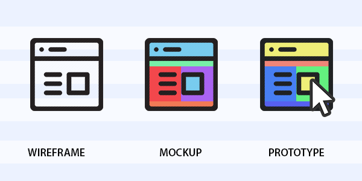
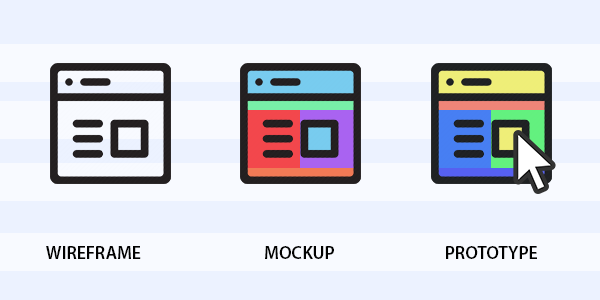

Pendidikan di era digital telah mengalami transformasi yang signifikan, terutama dengan berkembangnya teknologi yang semakin canggih. SMK Negeri 7 Ambon sebagai salah satu institusi pendidikan yang berada di tengah-tengah perubahan ini, tidak terkecuali dari tantangan-tantangan yang dihadapi dalam memfasilitasi pembelajaran yang sesuai dengan perkembangan zaman serta kebutuhan siswa yang beragam. Metode pembelajaran konvensional yang telah lama diterapkan mungkin tidak lagi memadai dalam menghadapi tantangan pendidikan saat ini. Kurangnya keterlibatan siswa dan kesesuaian dengan gaya belajar individu menjadi perhatian utama dalam upaya meningkatkan kualitas pembelajaran.
Di samping itu, kemajuan pesat dalam bidang kecerdasan buatan (AI) dan pemrosesan bahasa alami (NLP) memberikan peluang baru dalam meningkatkan efektivitas pembelajaran. Teknologi AI, khususnya NLP, telah menunjukkan kemampuannya dalam memahami dan memproses bahasa manusia dengan tingkat akurasi yang semakin tinggi. Penggunaan aplikasi berbasis NLP dalam konteks pendidikan menjanjikan kemampuan untuk memberikan respons yang lebih personal dan sesuai dengan kebutuhan siswa. Dengan demikian, aplikasi AI berbasis NLP dapat menjadi solusi yang potensial untuk meningkatkan interaksi antara siswa dan materi pembelajaran, serta memfasilitasi pembelajaran yang lebih efektif dan menyenangkan
Selain teknologi AI, pendekatan pembelajaran berbasis game juga telah menjadi tren yang populer dalam pendidikan. Game edukasi telah terbukti efektif dalam meningkatkan keterlibatan siswa dan memfasilitasi pemahaman konsep yang kompleks dengan cara yang menyenangkan. Integrasi elemen permainan dalam proses pembelajaran tidak hanya meningkatkan motivasi siswa, tetapi juga memungkinkan mereka untuk belajar dengan cara yang lebih interaktif dan intuitif
Melihat potensi yang dimiliki oleh teknologi AI, khususnya NLP, dan pendekatan pembelajaran berbasis game, pengembangan platform aplikasi yang menggabungkan kedua aspek tersebut menjadi sebuah inovasi yang menarik. Dengan memperhatikan konteks pendidikan lokal yang unik di Ambon dan kebutuhan siswa SMK Negeri 7 Ambon, pengembangan platform aplikasi AI berbasis NLP dan game edukasi diharapkan dapat memberikan kontribusi positif dalam meningkatkan kualitas pembelajaran di sekolah tersebut.
Proses Identifikasi masalah dalam konteks SMK Negeri 7 Ambon yaitu:
- 1. Minat Belajar Siswa, tantangan utama adalah meningkatkan minat belajar siswa terhadap materi pembelajaran. Sering kali, pendekatan konvensional kurang mampu menangkap minat siswa, sehingga menyebabkan kebosanan dan kurangnya motivasi belajar.
- 2. Ketersediaan Materi Pembelajaran, beberapa materi pembelajaran mungkin sulit diakses atau sulit mendapatkan referensi tambahan. Hal ini dapat menghambat proses pembelajaran efektif.
- 3. Kesesuaian dengan Kebutuhan Siswa, setiap siswa memiliki kecepatan dan gaya belajar yang berbeda. Oleh karena itu, penting untuk menyediakan pembelajaran yang dapat disesuaikan dengan kebutuhan dan tingkat pemahaman masing-masing siswa.
- 4. Ketersediaan tools belajar yang pintar dan menarik, kurangnya edukasi mengenai kecerdasan buatan sehingga sebagian besar Siswa belum memiliki pengetahuan mengenai teknologi ini.
- 1. Siswa SMK Negeri 7 Ambon, Stakeholder utama adalah siswa SMK Negeri 7 Ambon yang akan menjadi pengguna langsung dari platform aplikasi AI berbasis NLP dan game edukasi ini. Para Siswa akan menggunakannya sebagai alat pembelajaran yang pintar untuk memperdalam pemahaman mereka tentang materi pelajaran.
- 2. Guru dan staf pengajar, para guru dan staf pengajar di SMK Negeri 7 Ambon menjadi stakeholder penting karena mereka akan menggunakan platform ini sebagai alat bantu dalam mengajar maupun mendaptakan informasi yang relevan mengenai materi pelajaran.
- 3. Administrasi sekolah, termasuk kepala sekolah dan staf administrasi, memiliki kepentingan dalam melihat dampak penggunaan platform ini terhadap hasil belajar siswa dan efisiensi dalam proses pembelajaran.
- 4. Pengembang aplikasi dan game, tim pengembang yang bertanggung jawab untuk menciptakan dan memelihara platform ini merupakan stakeholder kunci. Tim perlu memastikan bahwa aplikasi dan game yang dibuat dapat memenuhi kebutuhan pengguna dan berfungsi dengan baik.
- 5. Orang tua siswa, orang tua siswa juga merupakan stakeholder penting karena mereka akan tertarik untuk mengetahui bagaimana platform ini dapat meningkatkan keterlibatan dan prestasi akademis anak-anak mereka. Mereka juga dapat memberikan masukan tentang penggunaan platform ini di rumah.
Analisis kebutuhan memliki tujuan untuk menganalisis kebutuhan apa saja yang dibutuhkan untuk membangun sebuah sistem. Dalam menganalisis kebutuhan sistem akan membahas kebutuhan pengguna dan kebutuhan sistem itu sendiri. Untuk mengumpulkan data pada penelitian ini peneliti menggunakan teknik pengumpulan data observasi dan wawancara.
Kegiatan observasi serta wawancara dilakukan dengan tujuan agar dapat mengetahui proses pembelajaran yang berlangsung, prosedur yang ada, dan data-data yang terkait. Dari proses tersebut juga diharapkan dapat mengetahui perlu atau tidaknya perubahan atau penambahan sistem.
Observasi diawali dengan mengamati langsung perilaku dan aktivitas siswa SMA Negeri 1 Ambon dalam pembelajaran dan mengerjakan tugas sekolah. Penulis mengunjungi beberapa kelas yang berbeda untuk melihat secara langsung bagaimana siswa berinteraksi dengan materi pelajaran dan mengatasi hambatan-hambatan yang mereka hadapi. Melalui observasi ini, peneliti dapat mengidentifikasi pola-pola umum dalam cara siswa belajar dan area-area di mana mereka membutuhkan bantuan tambahan.
Selanjutnya, peneliti melakukan serangkaian wawancara dengan guru dan siswa SMA Negeri 1 Ambon. Dalam wawancara dengan guru, peneliti bertujuan untuk memahami perspektif mereka tentang tantangan yang dihadapi siswa dalam mengerjakan tugas dan peluang untuk pengembangan aplikasi yang dapat membantu mengatasi tantangan tersebut, peneliti juga meminta saran tentang fitur seperti apa yang dibutuhkan untuk memudahkan proses pembelajaran. Sedangkan dalam wawancara dengan siswa, peneliti ingin mendengarkan langsung pengalaman mereka dalam belajar dan mengerjakan tugas sekolah, serta mengetahui harapan dan preferensi mereka terhadap sebuah aplikasi pendidikan. peneliti juga meminta saran tentang fitur seperti apa yang dibutuhkan untuk memudahkan proses pembelajaran.
- - Siswa dapat mencari informasi mengenai materi pelajaran atau topik lain
- - Siswa dapat menginput gambar untuk mencari informasi mengenai gambar tersebut
- - Siswa dapat menambahkan catatan dan mendapatkab notifikasi catatan tersebut
- - Siswa dapat bermain game edukasi
- - Siswa dapat menggunakan voice chat
- - Siswa dapat mengetahui informasi tentang developer, sekolah, dan aplikasi
- - Sistem dapat memberikan informasi mengenai informasi yang diberikan oleh pengguna
- - Sistem dapat menampilkan informasi mengenai gambar yang diinput oleh pengguna
- - Sistem dapat menyimpan catatan yang diinput oleh pengguna dan menampilkan notifikasi catatan tersebut
- - Sistem dapat membaca inputan user berdasarkan suara
Selain itu, kebutuhan sistem juga dibagi menjadi 2 bagian, yaitu :
- 2.1 Kebutuhan perangkat lunak (software)
- 1. Sistem operasi windows 10 atau 11
- 2. Visual Studio Code
- 3. Emulator android
- 4. Web browser
- 5. Figma
- 6. UML
- 7. Bahasa pemrograman dart dan framework flutter
- 8. Bahasa markup HTML, CSS, dan bahasa pemrograman Javascript
- 2.2 Kebutuhan perangkat keras (hardware)
- 1. PC atau laptop dengan processor i3 generasi 11
- 2. RAM 8 GB
- 3. SSD 256 GB
- 4. Keyboard dan mouse sebagai piranti input
- 5. Smartphone dengan minimal versi android 4.4 KitKat
Spesifikasi komponen perangkat lunak yang digunakan untuk pembuatan aplikasi ini adalah sebagai berikut:
Spesifikasi komponen perangkat keras yang digunakan untuk pembuatan aplikasi ini adalah sebagai berikut:
Kebutuhan fungsional mendeskripsikan layanan, fitur atau fungsi yang disediakan oleh sistem untuk pengguna agar dapat sistem yang dibangun dapat sesuai. Adapaun kebutuhan fungsional yang dapat diuraikan yaitu :
- - Menyediakan fitur chat berbasis teks
- - Menyediakan fitur chat berbasis gambar
- - Menyediakan fitur catatan dan notifikasi
- - Menyediakan fitur game edukasi
- - Menyediakan fitur informasi tentang aplikasi, sekolah, dan developer
- - Menyediakan fitur voice chat untuk chat berbasis teks
Kebutuhan non-fungsional mendeskripsikan apa saja yang menjadi batasan terhadap kebutuhan perancangan sistem. Adapun kebutuhan non-fungsional dari sistem ini dibagi menjadi beberapa bagian yaitu, sebagai berikut :
- 4.1 Karakteristik pengguna
- Karakteristik pengguna adalah diperuntukan untuk siswa/siswi dan guru SMA Negeri 1 Ambon. Dengan adanya sistem ini diharapkan bisa mempermudah proses pembelajaran yang modern dan Interaktif.
- 4.2 Lingkungan operasi
- Persyaratan lingkungan operasi untuk menjalankan sistem ini adalah sebagai berikut :
- - Tempat penelitian berada di SMA Negeri 1 Ambon
- - Untuk menjalankan aplikasi, membutuhkan Smartphone android minimal versi android 4.4 KitKat
- 4.3 Asumsi dan ketergantungan
- - Sistem dapat memberikan jawaban berdasarkan prompt user, jika prompt mengandung unsur negatif maka akan muncul pemberitahuan
- Fitur chat akan berfungsi jika sistem terhubung dengan jaringan internet
- Sistem hanya bisa digunakan pada perangkat android dengan minimal versi android 4.4 KitKat
- Sistem hanya akan memberikan notifikasi catatan jika izin notifikasi sudah disetujui
- Sistem hanya akan mendengar inputan suara user jika izin mikrofon sudah disetujui
- 4.4 Batasan perancangan dan implementasi
- Bagian ini digunakan sebagai penentu batasan sistem agar penelitian ini menjadi lebih terarah dan berjalan sesuai harapan. Adapun batasan sistem adalah sebagai berikut :
- - Bahasa pemrograman yang digunakan adalah Dart dan framework flutter, serta HTML, CSS, Javascript
- - Tools untuk perancangan UI (User Interface) yang digunakan adalah figma
- - Tools untuk kode editor yang digunakan adalah Visual Studio Code
- - Tools untuk perancangan diagram dan model adalah UML (Unified Modeling Language)
- - Implementasi menggunakan perangkat android dengan minimal versi android 4.4 KitKat
Setelah tahap analisis kebutuhan sistem selesai dilakukan, maka analis sistem telah mendapatkan gambaran dengan jelas apa yang harus dikerjakan. Tiba waktunya sekarang bagi analis sistem untuk memikirkan bagaimana membentuk sistem tersebut. Tahap ini disebut dengan perancangan sistem. Sedangkan pemodelan sistem, ini berkaitan dengan pembuatan model visual atau representasi abstrak dari sistem yang akan dibangun.
UML adalah bahasa standar yang digunakan untuk mendokumentasikan, merancang, dan memodelkan sistem perangkat lunak. UML menyediakan seperangkat notasi grafis yang digunakan untuk menggambarkan berbagai aspek dari sistem, termasuk struktur, fungsi, dan interaksi antar komponen sistem, berikut adalah adalah rancangan diagram nya :

User Interface atau antarmuka pengguna adalah tampilan visual sebuah produk yang menghubungkan sistem dengan pengguna (user). Tools yang digunakan untuk desain user interface pada penelitian ini adalah Figma. Tahap ini akan dibagi menjadi 3 bagian yaitu wireframe, mockup, dan prototype.
 
Wireframe adalah representasi visual sederhana dari struktur tampilan dan tata letak aplikasi. Wireframe adalah skema dasar yang menampilkan elemen tanpa semua detail. Wireframe menampilkan rendering dasar yang pada umumnya berwarna hitam dan putih atau abu-abu. Wireframe berfokus pada “gambaran besar” mengenai tampilan produk.
List menu 1

List menu 2

List menu 3

List menu 4

Chat menu

Chat with image menu 1

Chat with image menu 2

Notes menu 1

Notes menu 2

Notes menu 3

Notes menu 4

Gallery menu

Education menu

Connect with us menu

Exit menu

About dev menu

About SMKN 7 Ambon menu

About app menu

Mockup adalah representasi visual yang lebih detail, termasuk elemen desain seperti warna, tipografi, dan ilustrasi. Mockup adalah tahapan yang akan dilakukan selanjutnya ketika wireframe telah di approve. Mockup menampilkan rendering statis namun realistis tentang seperti apa tampilan produk atau fitur dan bagaimana produk atau fitur itu akan digunakan nantinya. Berikut adalah hasil desain mockup yang diajukan :
List menu 1

List menu 2

List menu 3

List menu 4

Chat menu

Chat with image menu 1

Chat with image menu 2

Notes menu 1

Notes menu 2

Notes menu 3

Notes menu 4

Gallery menu 1

Gallery menu 2

Gallery menu 3

Education Games menu

Education connect with us

Exit menu

About dev menu

About SMKN 7 Ambon menu

About app menu

Prototype adalah representasi interaktif yang mensimulasikan fungsi dan interaksi pengguna. Prototype merupakan konsep clickable yang sudah dapat merespons berbagai perintah.
Berikut link demonstrasi prototype dari sistem yang dirancang:
link prototypeThank You 😊